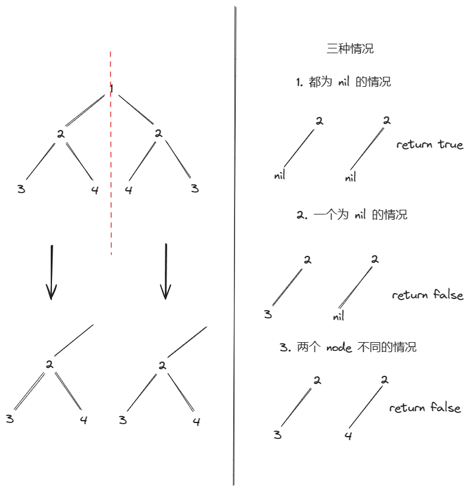
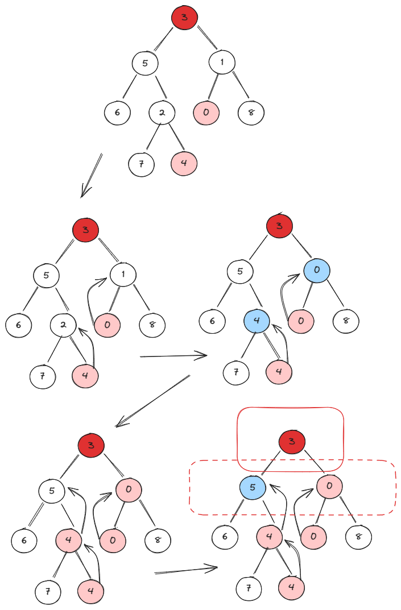
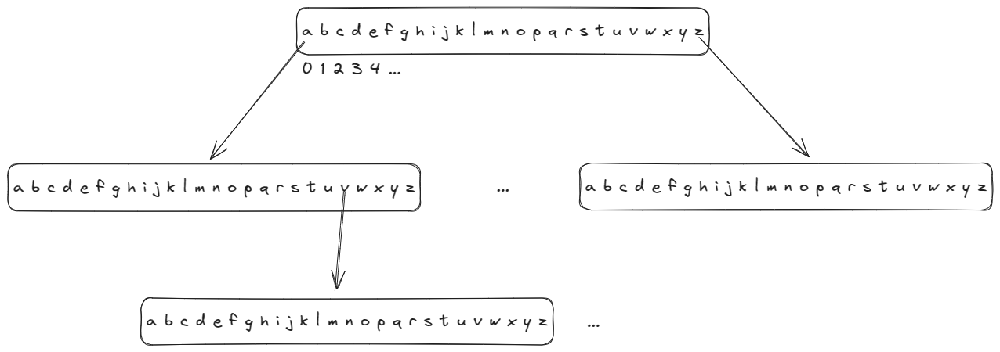

小吴修仙传之算法篇
数组/字符串
合并两个有序数组
88. 合并两个有序数组
1 利用 sort 函数（快排，不推荐）
将数组2的数据合并到数组1
使用 sort 函数对数组1进行排序
- C++使用的是
sort 函数：sort(nums1.begin(), nums1.end());
- Golang使用的是
sort.Slice 函数：sort.Slice(nums1, func(i, j int){ return nums1[i] < nums2[j]})
2 双指针，使用辅助空间（空间复杂度 O(m+n)）
- 构建一个
m + n 的辅助空间
- 利用双指针，比较
nums1 与 nums2，放到辅助空间中
- 最后将辅助空间的数组拷贝到
nums1 中
3 逆向双指针（空间复杂度 O(1)，推荐）
利用 nums1 中的数组尾部为空可以作为暂存的辅助空间来进行排序，先排最大的，放到辅助空间
实际是三指针
nums1 的逆向下表存储的指针（idx）：用来标记当前存放元素的位置nums1 的数组实际下表指针（i）：用来标记比较到的位置nums2 的数组实际下表指针（j）：用来标记比较到的位置
需要考虑两种情况
（1）nums2 遍历结束，nums1 遍历没结束（使用 nums2 数组的下表判断是否超出范围，超出范围直接结束，因为 nums2 排完序之后，nums1 就不需要排序了）

（2）nums1 遍历结束，但是 nums2 遍历没结束，即 nums1 的下表超出范围

- 从两个数组的最后向前遍历，同时移动
idx 指针
func merge(nums1 []int, m int, nums2 []int, n int) {
idx, i, j := m + n - 1, m - 1, n - 1
for ; idx >= 0 && j >= 0; idx-- {
if i < 0 && j >= 0 {
nums1[idx] = nums2[j]
j--
continue
}
if nums1[i] >= nums2[j] {
nums1[idx] = nums1[i]
i--
} else {
nums1[idx] = nums2[j]
j--
}
}
}
删除有序数组中的重复项 Ⅱ
80. 删除有序数组中的重复项 II
使用快慢指针：重复项，一般都需要前驱标志位来比较是否重复，重复次数，一般需要计数标志位
- 快慢指针：快指针用来遍历数组，慢指针用来标记新数组（下一个可以放置符合条件元素的位置）
- 前驱标志位：用来记录上一个元素的值，用来比较快指针遍历到的元素是否与上一个元素重复
- 计数标志位：用来记录与前驱标志位重复的次数
需要判断的三种情况：
- 重复且不超过两次的情况：不超过两次都是符合题意，使用这个元素构建新数组
- 重复且超过两次的情况：直接跳过这个元素
- 不相等的情况：需要同时修改前驱标志位，计数标志位，同时使用这个元素构建新数组
func removeDuplicates(nums []int) int {
count := 1
pre := nums[0]
left, right := 1, 1
for ; right < len(nums); right++ {
// 相等的情况，重复不超过两次，增加计数
if nums[right] == pre && count < 2 {
nums[left] = pre
left++
count++
} else if nums[right] == pre && count >= 2 { // 相等的情况，重复超过了两次，增加技术，只修改右指针
count++
} else { // 不相等的情况，需要 增加计数，修改左指针，以及 pre
nums[left] = nums[right]
left++
pre = nums[right]
count = 1
}
}
return left
}
最后一个单词的长度
58. 最后一个单词的长度
直接通过 " " 切分字符串，然后判断最后一个
- golang 的
Split 切分后要考虑 "" 的存在
双指针
判断子序列
392. 判断子序列
双指针，直接顺序判断另一个数组中，是否按序出现子序列的所有字符
注意：s 长度为 0 的情况，需要判断
两数之和Ⅱ - 输入有序数组
167. 两数之和 II - 输入有序数组
双指针，从数组两端求和，向中间靠拢
- 当和大于
target，则右指针移动，减小 sum
- 当和小于
target，则左指针移动，增加 sum
验证回文串
125. 验证回文串
双指针，从中间向两端扩散
反转字符串，判断是否相等
滑动窗口
无重复字符的最长字串
3. 无重复字符的最长子串
双指针，进行收缩窗口，如果记录中存在了扩展窗口的字符，就需要进行收缩窗口
左右指针
- 左指针代表收缩窗口指针：要明确指针其实位置代表的意义（左指针到了当前的位置，就从记录中去掉这个字符，那起始指针的下标就是 -1）
- 右指针代表扩张窗口指针：要明确扩张指针下标代表的意义（右指针到了当前位置，就从记录中加入这个字符，那起始指针的下标就是 -1）
收缩扩张逻辑：
- 扩张：每次右指针都进行扩张，所以每次循环开始的时候指针下标都要 +1（-1 作为起始下标）
- 收缩：每次扩张之后，如果记录中有这扩张的这个字符，那么就需要收缩，收缩到记录中没有这个字符为止，即记录子串的所有字符都是唯一的
func lengthOfLongestSubstring(s string) int {
maxLength := 0
lenght := 0
left, right := -1, -1
record := map[rune]bool{}
sSlice := []rune(s)
if len(s) == 0 {
return maxLength
}
for right < len(s)-1 {
// 右滑动
right++
lenght++
if value, ok := record[sSlice[right]]; ok == false || ok == true && value == false {
record[sSlice[right]] = true
} else {
// 收缩: 存在 key 的情况
for left < right {
left++
lenght--
if sSlice[left] == sSlice[right] {
break
}
record[sSlice[left]] = false
}
}
maxLength = max(maxLength, lenght)
}
return maxLength
}
func max(maxLength, lenght int) int {
if maxLength > lenght {
return maxLength
} else {
return lenght
}
}
矩阵
哈希表
单词规律
290. 单词规律
使用哈希表记录模式对应的单词，验证存在的模式是否单词也对应
- 要注意模式与单词长度是否对应
- 要注意不同模式的单词一定不同
区间
栈
简化路径
71. 简化路径
将路径节点根据条件出栈入栈
注意：C++ 需要自己实现 split，因此要注意最后一个节点不能通过 '/' 去判断的情况
Golang 要注意一个问题，使用 Split 之后，会切分出 "" 的情况，所以需要判断
二叉树的后序遍历
145. 二叉树的后序遍历
二叉树的后序遍历不使用递归的方法
后序遍历：左右根 --> 换种思路，使用先序遍历的方式： 根右左，然后使用栈，倒转一下
一直向右，每次到叶子节点，换成向左
/**
* Definition for a binary tree node.
* type TreeNode struct {
* Val int
* Left *TreeNode
* Right *TreeNode
* }
*/
func postorderTraversal(root *TreeNode) []int {
// 双栈后序遍历
// 后序遍历 左右根 --> 根右左
stackOne := stack{
len: 0,
container: []interface{}{},
}
stackTwo := stack{
len: 0,
container: []interface{}{},
}
cur := root
for cur != nil || !stackOne.IsEmpty() {
// 一直向右遍历
for cur != nil {
stackOne.Push(cur)
stackTwo.Push(cur.Val)
cur = cur.Right
}
// 每次遇到最右边的节点，通过 pop 方法获取最右边的节点，更换成左边节点，继续向右遍历，每向右到叶子节点，就更换一次左节点
if !stackOne.IsEmpty() {
cur = stackOne.Pop().(*TreeNode)
cur = cur.Left
}
}
ret := []int{}
for !stackTwo.IsEmpty() {
tempNode := stackTwo.Pop().(int)
ret = append(ret, tempNode)
}
return ret
}
type stack struct {
len int
container []interface{}
}
func (s *stack) Push(node interface{}) {
s.container = append(s.container, node)
s.len++
}
func (s *stack) Pop() interface{} {
tempNode := s.container[s.len-1]
if s.len == 1 {
s.container = []interface{}{}
} else {
s.container = s.container[0: s.len-1]
}
s.len--
return tempNode
}
func (s *stack) IsEmpty() bool {
return s.len == 0
}
链表
两个链表的第一个公共节点
BM10 两个链表的第一个公共结点
双指针：len(第一个链表的长度 + 第二个链表的长度) = len(第二个链表的长度 + 第一个链表的长度)，两者没有交点，那这个长度之后就指向 nil，如果有交点，在同一长度就能相遇
func FindFirstCommonNode( pHead1 *ListNode , pHead2 *ListNode ) *ListNode {
// write code here
tempNode1 := pHead1
tempNode2 := pHead2
for tempNode1 != tempNode2 {
if tempNode1 == nil {
tempNode1 = pHead2
} else {
tempNode1 = tempNode1.Next
}
if tempNode2 == nil {
tempNode2 = pHead1
} else {
tempNode2 = tempNode2.Next
}
}
// 两个长度相同，没有相遇的点，就是全NULL
return tempNode1
}
二叉树
从中序与后序遍历序列构造二叉树
106. 从中序与后序遍历序列构造二叉树
先找根节点
再根据根节点拆分左右子树

/**
* Definition for a binary tree node.
* type TreeNode struct {
* Val int
* Left *TreeNode
* Right *TreeNode
* }
*/
func buildTree(inorder []int, postorder []int) *TreeNode {
if len(inorder) == 0 {
return nil
}
// 后续遍历的最后一个是根节点
// 中序遍历的这个节点左边是左子树，右边是右子树
// TODO: 找根节点
n := len(postorder) - 1
root := postorder[n]
// TODO: 构建根节点
rootNode := &TreeNode{
Val: root,
}
// TODO: 找 inorder 的左右子树
var tempInorderLeft []int
var tempPostorderLeft []int
var tempInorderRight []int
var tempPostorderRight []int
for idx, node := range inorder {
// 暂存左子树
if node == root && idx - 1 >= 0 {
tempInorderLeft = inorder[0: idx]
tempPostorderLeft = postorder[0: len(tempInorderLeft)]
}
// 暂存右子树
if node == root && idx + 1 < len(inorder) {
tempInorderRight = inorder[idx+1:]
tempPostorderRight = postorder[len(tempInorderLeft): len(tempInorderLeft)+len(tempInorderRight)]
}
}
// TODO: 找 postorder 的左右子树, 不用找，直接算
// Q: 不能选 0 怎么办
rootNode.Left = buildTree(tempInorderLeft, tempPostorderLeft)
rootNode.Right = buildTree(tempInorderRight, tempPostorderRight)
return rootNode
}
对称二叉树
101. 对称二叉树
镜像问题，通过将对称的部分反转来对比即可

二叉树的最近公共祖先
236. 二叉树的最近公共祖先
使用后序遍历，最后判断当前节点的左右子树是否存在于给定两个节点相等的节点。
- 退出条件：当前节点（root）到叶子节点下了（nil），或者当前节点等于给定节点之一
相当于一个左右子树节点上浮的操作

/**
* Definition for a binary tree node.
* type TreeNode struct {
* Val int
* Left *TreeNode
* Right *TreeNode
* }
*/
func lowestCommonAncestor(root, p, q *TreeNode) *TreeNode {
if root == nil || root == q || root == p {
return root
}
left := lowestCommonAncestor(root->Left, p, q)
right := lowestCommonAncestor(root->Right, p, q)
// 后序遍历，到最下层的叶子节点，然后进行节点上浮
if right != nil && left != nil {
return root
} else if left != nil {
return left
} else {
return right
}
}
反转二叉树
226. 翻转二叉树
后序遍历，获取当前节点的左右子树，然后对当前的左右子树进行转换，返回当前节点。
二叉树层序遍历
二叉树的层平均值
637. 二叉树的层平均值
使用队列来遍历每一层
- 需要记录上一层的数量，用来进出队列遍历每一层
- golang 封装一个
slice 的结构体来实现队列
/**
* Definition for a binary tree node.
* type TreeNode struct {
* Val int
* Left *TreeNode
* Right *TreeNode
* }
*/
func averageOfLevels(root *TreeNode) []float64 {
queue := new(Queue)
queue.Length = 0
queue.Push(root)
layerNum := 1
layerSum := root.Val
var ret []float64
for !queue.IsEmpty() {
avg := float64(layerSum)/float64(layerNum)
ret = append(ret, avg)
layerSum = 0
num := 0
for i := 0; i < layerNum; i++ {
tail := queue.Pop()
if tail.Left != nil {
queue.Push(tail.Left)
num++
layerSum += tail.Left.Val
}
if tail.Right != nil {
queue.Push(tail.Right)
num++
layerSum += tail.Right.Val
}
}
layerNum = num
}
return ret
}
type Queue struct {
Q []*TreeNode
Length int
}
func (q *Queue) Pop() *TreeNode {
tail := q.Q[0]
q.Q = q.Q[1:]
q.Length--
return tail
}
func (q *Queue) Push(node *TreeNode) {
q.Q = append(q.Q, node)
q.Length++
}
func (q *Queue) IsEmpty() bool {
return q.Length == 0
}
二叉搜索树
图
图的广度优先搜索
字典树
实现Trie（前缀树）
208. 实现 Trie (前缀树)
树节点结构体：
（1）isEnd：用来表示每个单词的结尾
（2）[26]*Trie：用来作为字符的节点
实现思路：由于全是小写字母，所以将字符串拆分成单个字母，T rie 节点用来存储字母。通过字母对应的数组下标来遍历这棵树
- 每个
Trie 节点有一个存储下一个字符节点的数组
- 数组有长度对应着字母，下标对应字母（a-a，为 0 下标），a-0，b-1，c-2
- 注意，
Constructor 构建的 Trie 根，需要通过这个 Trie 根来访问 Trie 字符节点

type Trie struct {
isEnd bool
root [26]*Trie
}
func Constructor() Trie {
return Trie{
isEnd: false,
root: [26]*Trie{},
}
}
func (this *Trie) Insert(word string) {
byteWord := []byte(word)
var tempNode *Trie
if this.root[byteWord[0]-'a'] == nil {
this.root[byteWord[0]-'a'] = &Trie{
isEnd: false,
root: [26]*Trie{},
}
}
// 遍历每个节点
for i := 0; i < len(byteWord); i++ {
// 判断第一个节点，因为需要从根节点获取节点信息
if i == 0 {
tempNode = this.root[byteWord[i]-'a']
continue
}
// tempNode 是上一个节点，判断上个节点能否为当前 char 提供节点来存储
if tempNode.root[byteWord[i]-'a'] == nil {
tempNode.root[byteWord[i]-'a'] = &Trie{
isEnd: false,
root: [26]*Trie{},
}
}
// 更新节点
tempNode = tempNode.root[byteWord[i]-'a']
}
// 最后一个节点
tempNode.isEnd = true
}
func (this *Trie) Search(word string) bool {
// 同上
byteWord := []byte(word)
var tempNode *Trie
// 提前判断
if this.root[byteWord[0]-'a'] == nil {
return false
}
// 遍历每个节点
for i := 0; i < len(byteWord); i++ {
// 判断第一个节点，因为需要从根节点获取节点信息
if i == 0 {
tempNode = this.root[byteWord[i]-'a']
continue
}
if tempNode.root[byteWord[i]-'a'] == nil {
return false
}
// 更新节点
tempNode = tempNode.root[byteWord[i]-'a']
}
// 最后一个节点
if !tempNode.isEnd {
return false
}
return true
}
func (this *Trie) StartsWith(prefix string) bool {
// 同上
byteWord := []byte(prefix)
var tempNode *Trie
// 提前判断
if this.root[byteWord[0]-'a'] == nil {
return false
}
// 遍历每个节点
for i := 0; i < len(byteWord); i++ {
// 判断第一个节点，因为需要从根节点获取节点信息
if i == 0 {
tempNode = this.root[byteWord[i]-'a']
continue
}
if tempNode.root[byteWord[i]-'a'] == nil {
return false
}
// 更新节点
tempNode = tempNode.root[byteWord[i]-'a']
}
return true
}
回溯
全排列
46. 全排列
放球问题，列表中的元素相当于球，列表长度，相当于桶，将列表的球放到列表对应的桶中有多少中方法，第一个桶每个球都可以放一次，第二个桶，除了第一个桶正在放着的球，其他球都能在放进去N！
- 使用一个标记球是否使用的列表
used
- 使用一个放球的列表用来存入球
- 使用过的球（使用过几号球）通过下标来标记是否使用
- 回溯：从访求的列表拿出来，然后取消标记
// 注：golang 代码，因为 slice 内存地址的问题，所以会出现使用原地址指针的问题，所以需要使用 copy 拷贝一到新的 slice 中
func permute(nums []int) [][]int {
ret := [][]int{}
used := make([]bool, len(nums))
var dfs func([]int)
dfs = func(num []int) {
if len(num) == len(nums) {
slice := make([]int, len(nums))
copy(slice, num)
ret = append(ret, slice)
return
}
for i := 0; i < len(nums); i++ {
if used[i] {
continue
}
used[i] = true
num = append(num, nums[i])
dfs(num)
// 回溯
used[i] = false
if len(num) == 1 {
num = []int{}
} else {
num = num[0: len(num)-1]
}
}
}
dfs([]int{})
return ret
}
全排列Ⅱ
47. 全排列 II
同样的放球问题，不过要去重，在原本的代码基础上，去除重复项（两个球同颜色）
- 去重的第一步，要对数组进行排序
- 在对下一个相同的作为起点进行排序的时候，前面相同的会被重新放一次，所以如果前面的未使用，这种情况就需要跳出
func permuteUnique(nums []int) [][]int {
ret := [][]int{}
var dfs func([]int)
// 排序，去重
sort.Ints(nums)
// 穷举剪枝法
// 穷举用到的记录标志位: 用来记录那个球被放进去了, 下标表示球号
used := make([]bool, len(nums))
dfs = func(num []int) {
if len(num) == len(nums) {
slice := make([]int, len(nums))
copy(slice, num)
ret = append(ret, slice)
return
}
// 穷举
for i := 0; i < len(nums); i++ {
// 去除重复的元素
if used[i] || i > 0 && nums[i] == nums[i-1] && !used[i-1] {
continue
}
// 没用过，要放进去
used[i] = true
num = append(num, nums[i])
dfs(num)
// 回溯，把球拿出来
if len(num) == 1 {
num = []int{}
} else {
num = num[0:len(num)-1]
}
used[i] = false
}
}
dfs([]int{})
return ret
}
分治
Kadane算法
二分查找
堆
位运算
数学
一维动态规划
单词拆分
139. 单词拆分
使用集合或者哈希表存储给定的单词，然后构建一个用于动归的辅助列表，用来标记能否进行标记的结果。动归的方式：外层遍历字符串的长度，用来确定字符串当前位置是否能够拼接成功；内层遍历当前位置的前面所有位置，判断前面的位置和前面位置到当前位置能否拼接成功。
- 辅助数组通常是需要的结果
- 本质是遍历前面已经拼接过的位置，看这个位置是否拼接成功，这个位置后面的是否能拼接
func wordBreak(s string, wordDict []string) bool {
wordDictSet := map[string]bool{}
for _, word := range wordDict {
wordDictSet[word] = true
}
// 用于动归的辅助数组
dp := make([]bool, len(s)+1)
// 起始条件
dp[0] = true
// 思路：前面 j 与 后面的那一段，在单词表中出现过，能拼接成
// 外层循环的是长度
for i := 1; i <= len(s); i++ {
// 内层循环的是子数组
for j := 0; j < i; j++ {
exist := false
if i == len(s) {
_, exist = wordDictSet[s[j:]]
} else {
_, exist = wordDictSet[s[j:i]]
}
if dp[j] && exist {
dp[i] = true
}
}
}
return dp[len(s)]
}
多维动态规划
排序算法
快速排序
原数组原地排序
原理知识：
（1）排序原理：每次确定一个元素的位置（哨兵），这个元素的左边元素都要比它小，右边的元素都要比它大，然后在对这个元素的左右数组进行排序
（2）哨兵：预先选出的，每次数组排序最后要确定的位置，通常哨兵为最左边的位置
（3）待替换位置：直接覆盖，最起始的位置是哨兵位置（在左侧和右侧进行轮换）；从右侧开始比较，不满足条件（左侧的要比哨兵小，右侧的要比哨兵大）要放到待替换的位置
（4）哨兵位置确定：最后左侧下标等于右侧下标的时候，即哨兵确定的位置
（5）右侧向左侧推进，左侧向右侧推进：每次直到找到不符合条件的进行替换位置。
func QuickSort(array []int, left, right int) {
if left > right {
return
}
begin := left
end := right
sentinel := array[left]
for left < right {
// 从右向左推进
for left < right {
// 找到可以交换的，进行换位
if sentinel >= array[right] {
array[left] = array[right]
left++
break
}
right--
}
// 从左向右推进
for left < right {
// 找到可以交换的，进行换位
if array[left] >= sentinel {
array[right] = array[left]
right--
break
}
left++
}
fmt.Println("array: ", array, " sentinel: ", sentinel)
}
// left = right
array[left] = sentinel
// 拆分左右数组
QuickSort(array, begin, left-1)
QuickSort(array, left+1, end)
}